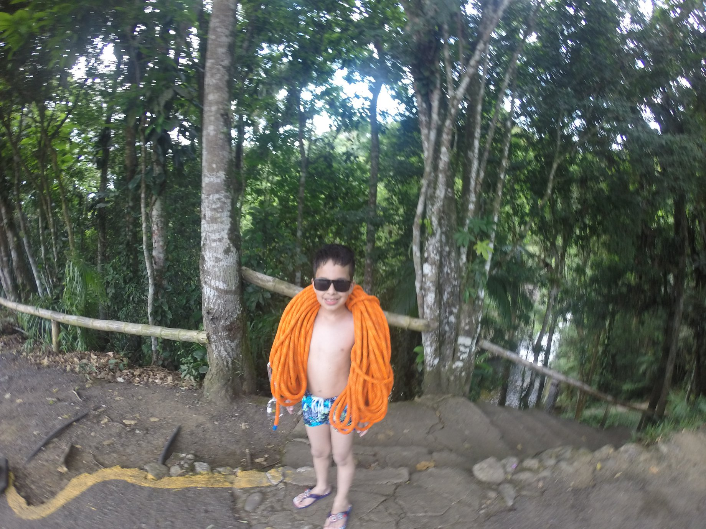
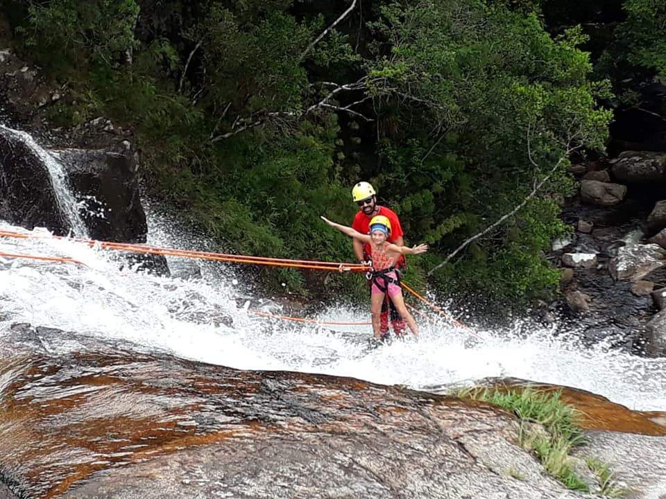
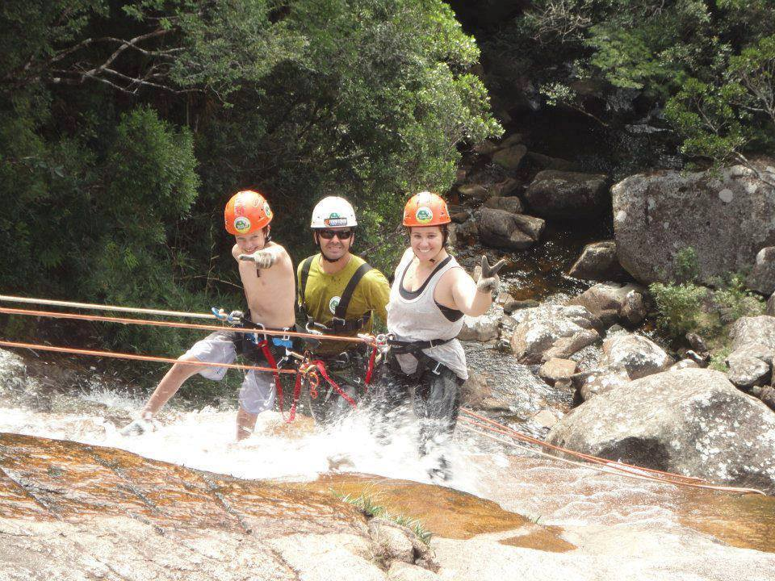
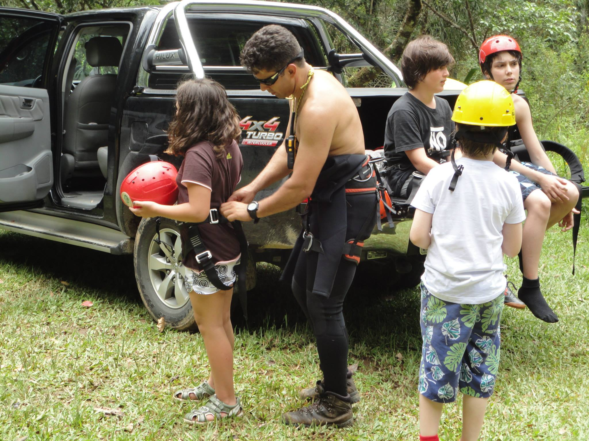
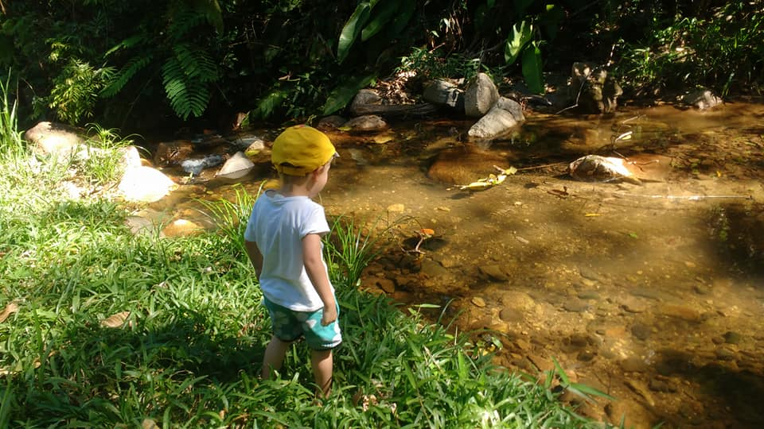

Detalhes do Roteiro
A Paraná Ecoturismo, oferece em Morretes, diversas opções de pacotes turísticos ideais para famílias com crianças, combinando diversão, aprendizado e contato com a natureza.
Neste pacote, temos opções emocionantes e seguras de rapel adaptadas para crianças, ideais para quem busca aventura em meio à natureza. Esta atividade é adaptada para crianças a partir de 4 anos e consiste em uma descida segura de 15 metros em uma cachoeira, utilizando equipamentos específicos e acompanhamento de condutores especializados.
Serviços incluso no pacote:
Transporte a partir do centro de Morretes;
Estacionamento, caso utilize seu próprio transporte;
Equipamentos de segurança;
Ingresso de entrada na reserva;
Condutores especializados a técnicas vertical;
Banheiros com ducha;
Seguro aventura;
Fotos e filmagens da atividade;
Aluguel de roupa neoprene;
Informações adicionais:
Rapel de Cachoeira Kids:
Altura: 15 metros;
Duração: período manhã/tarde;
Idade mínima de 4 anos;
Não precisa saber nadar, não pega partes com profundidades;
Grupo de crianças: mínimo 2 / máximo 15;
Acompanhados dos Pais ou responsáveis legais;
Usar tênis fechados e roupas confortáveis;
Os pais podem acompanhar de perto toda operação.
Galeria de Fotos




